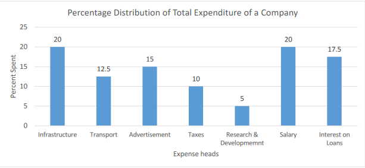
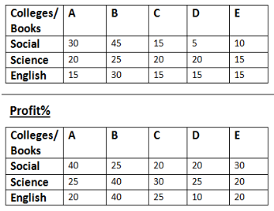

Direction :What approximate value will come in place of question mark (?) in the given question? (You are not expected to calculate the exact value) 42.03 × 21.06 ÷ 6 + 623 + √2500.16 = (?) A) 798 B) 820 C) 835 D) 810 E) 825 .
Direction :What approximate value will come in place of question mark (?) in the given question? (You are not expected to calculate the exact value) (40.36)2 – √841.67 + 25% of 600.87 = (?) A) 1780 B) 1660 C) 1750 D) 1800 E) 1721 .
Direction :What approximate value will come in place of question mark (?) in the given question? (You are not expected to calculate the exact value) 40% of 400.66 + 30% of 150.89 – 45% of 200.38=(?)%1150 A) 20 B) 25 C) 15 D) 10 E) 5 .
Direction :What approximate value will come in place of question mark (?) in the given question? (You are not expected to calculate the exact value) 795.009 ÷ 15.234 - 768.123 ÷ 12.099 - 63.98 ÷ 4 + 1272.985 ÷ 19.195 = (?) A) 50 B) 40 C) 45 D) 55 E) 52 .
Direction :What approximate value will come in place of question mark (?) in the given question? (You are not expected to calculate the exact value) √x + 36.09% of 300 – 16.009 × 25.897 = -(17)2 A) 16 B) 1 C) 4 D) 25 E) 9 .
In a college,seats for Sociology, History and Economics are in the ratio of 5:7:8. There is a proposal to increase these seats by 40%, 50% and 75% respectively.What will be the new ratio? A) 2:3:5 B) 2:3:4 C) 1:2:3 D) 2:3:7 E) 2:2:3
If 6 years are substracted from the present age of Ramesh and the remainder is divided by 18, then present age of Mohan is obtained. If Mohan is 2 years younger than Sita, who is 5 years old, what is the age of Ramesh (in years) A) 45 B) 50 C) 40 D) 36 E) 60
A man is sitting in a train which is travelling at 60 kmph observes that a goods train travelling in opposite direction , takes 9 seconds to pass him.If the goods train is 280 m long, what is its speed A) 50 B) 56 C) 60 D) 52 E) 55
In a stream running at 2kmph , motorboat goes 6 km upstream and back again to starting point in 33 minutes.Find the speed of the motorboat in still water?(in kmph) A) 24 B) 26 C) 22 D) 28 E) 20
Three successive discounts of 20%, 25% and 50/3% is equivalent to single discount of ? A) 40% B) 41.67 % C) 66.00% D) 50% E) 56.66%
The average age of 3 men is 45 years and their ages are in the proportion 3:5:7. The difference between the ages of the eldest man and the youngest man is ? A) 35 B) 39 C) 38 D) 36 E) 40
In a bag there are three types of coins, 1rupee, 50paisa, 25paisa in the ratio of 5:10:16. The total value is Rs 700. What is the total number of coins ? A) 1550 B) 1625 C) 1575 D) 1475 E) 1450
An automobile financer claims to be lending money at simple interest, but he includes the interest every six months for calculating the principal. If he is charging an interest of 10%, the effective rate of interest becomes ? A) 9.50% B) 10% C) 10.50% D) 9.25% E) 10.25%
Poles are to be fixed along the boundary of a rectangular field in such a way that distance between any two adjacent poles is 2 m.The perimeter of the field is 70m and length and the breadth of the field are in the ratio 4:3 respectively. How many poles will be required? A) 42 B) 40 C) 35 D) 38 E) 45
In a group of 14 boys and x number of girls, the probability of choosing a girl is 3/5. If we have to select two students, find the probability that atleast one of them is boy A) 11:17 B) 7:19 C) 5:9 D) 12:17 E) 10:13
Direction : In the given questions, two quantities numbered (I) and (II) are given below.You have to solve both the quantities and mark the appropriate answer: 1) Quantity (I) ≥Quantity (II)2) Quantity (I) < Quantity(II) 3) Quantity (I) ≤Quantity (II) 4) Quantity (I) > Quantity(II) 5) Quantity (I) = Qunatity(II) Or No Relation
A hemisphere of radius 4 cm is to be shipped in a shipping box of rectangular shape. The dimension of the box are consecutive odd numbers.Quantity (I): Minimum volume of box required to have the shipment possible.Quantity (II): 960 cm3 A) Quantity (I) ≥ Quantity (II) B) Quantity (I) < Quantity (II) C) Quantity (I) ≤ Quantity (II) D) Quantity (I) > Quantity (II) E) Quantity (I) = Quantity (II) or No relation
Direction : In the given questions, two quantities numbered (I) and (II) are given below.You have to solve both the quantities and mark the appropriate answer: 1) Quantity (I) ≥Quantity (II)2) Quantity (I) < Quantity(II)3) Quantity (I) ≤Quantity (II) 4) Quantity (I) > Quantity(II) 5) Quantity (I) = Qunatity(II) Or No Relation
In a container there are 20 eggs out of which 5 are rotten. Two eggs are chosen at random.Quantity (I): Probability that at least one egg is rottenQuantity (II): Average of (1/2), (1/3) and (1/5) A) Quantity (I) ≥ Quantity (II) B) Quantity (I) < Quantity (II) C) Quantity (I) ≤ Quantity (II) D) Quantity (I) > Quantity (II) E) Quantity (I) = Quantity (II) or No relation
Direction : In the given questions, two quantities numbered (I) and (II) are given below.You have to solve both the quantities and mark the appropriate answer: 1) Quantity (I) ≥Quantity (II)2) Quantity (I) < Quantity(II)3) Quantity (I) ≤Quantity (II) 4) Quantity (I) > Quantity(II) 5) Quantity (I) = Qunatity(II) Or No Relation
Find the distance if Quantity (I): A man covers a distance in 15 hours. He covers first half at 12 kmph and second half at 15 kmph.Quantity (II): Two buses moves towards each other at a speed of 30 kmph and 40 kmph respectively. When they meet it is found that faster bus covers 30 km more than slower one A) Quantity (I) ≥ Quantity (II) B) Quantity (I) < Quantity (II) C) Quantity (I) ≤ Quantity (II) D) Quantity (I) > Quantity (II) E) Quantity (I) = Quantity (II) or No relation
Direction (21-28): In the given questions, two quantities numbered (I) and (II) are given below.You have to solve both the quantities and mark the appropriate answer: 1) Quantity (I) ≥Quantity (II)2) Quantity (I) < Quantity(II)3) Quantity (I) ≤Quantity (II) 4) Quantity (I) > Quantity(II) 5) Quantity (I) = Qunatity(II) Or No Relation
Quantity (I): x where: 4x2 – 16x + 15 = 0 Quantity (II): y where: 2y2 + y -6 = 0 A) Quantity (I) ≥ Quantity (II) B) Quantity (I) < Quantity (II) C) Quantity (I) ≤ Quantity (II) D) Quantity (I) > Quantity (II) E) Quantity (I) = Quantity (II) or No relation
Direction (21-28): In the given questions, two quantities numbered (I) and (II) are given below.You have to solve both the quantities and mark the appropriate answer: 1) Quantity (I) ≥Quantity (II)2) Quantity (I) < Quantity(II)3) Quantity (I) ≤Quantity (II) 4) Quantity (I) > Quantity(II) 5) Quantity (I) = Qunatity(II) Or No Relation
Quantity (I): x, such that 12x2 – 5x – 3 = 0 Quantity (II): y, such that 3y2 – 11y + 6 = 0 A) Quantity (I) ≥ Quantity (II) B) Quantity (I) < Quantity (II) C) Quantity (I) ≤ Quantity (II) D) Quantity (I) > Quantity (II) E) Quantity (I) = Quantity (II) or No relation
Direction : The bar graph given below shows the percentage distribution of total expenditure of a company under various expense heads during 2019.Study the graph and answer the question that follows: 
The expenditure on the interest on loans is by what % more than the expenditures on transport ? A) 5% B) 10% C) 20% D)30% E) 40%
Direction : The bar graph given below shows the percentage distribution of total expenditure of a company under various expense heads during 2019.Study the graph and answer the question that follows:
What is the ratio of total expenditure on infrastructure and transport to the total expenditure on taxes and interest on loans? A) 5:4 B) 8:7 C) 9:7 D) 13:11 E) Cannot be determined
Direction : The bar graph given below shows the percentage distribution of total expenditure of a company under various expense heads during 2019.Study the graph and answer the question that follows:
If the experiment on advertisement is Rs 2.10 cr then the difference between the expenditure on transport and taxes is (Rs Cr) ? A) 0.35 B) 0.95 C) 0.65 D) 0.55 E) 0.25
Direction : The bar graph given below shows the percentage distribution of total expenditure of a company under various expense heads during 2019.Study the graph and answer the question that follows:
The total amount of expenditure of the company is how many times the expenditure on research and development ? A) 27 B) 20 C) 18 D) 8 E) 5
Direction : The bar graph given below shows the percentage distribution of total expenditure of a company under various expense heads during 2019.Study the graph and answer the question that follows:
If the interest on loan amounted to Rs 2.45 cr then the total amount of expenditure on advertisement , taxes and research and development is (Rs cr) ? A) 7 B) 3 C) 4.2 D) 5.4 E) 2.4
Direction :The subsequent tables show the quantity of 3 kinds of books (in 000's) Social, Science and English sold by XYZ Publication in 5 different colleges of India (A,B,C,D and E), within the year 2018, and the other table shows the profit % earned by XYZ Publication from these 5 colleges on the 3 books given above. Study each of the tables properly and answer the questions that follow 
Total no. of Social books sold in B, D and E is what percentage of total English books sold in these colleges? A) 60% B) 90.00% C) 88% D) 98% E) 100.00%
Direction :The subsequent tables show the quantity of 3 kinds of books (in 000's) Social, Science and English sold by XYZ Publication in 5 different colleges of India (A,B,C,D and E), within the year 2018, and the other table shows the profit % earned by XYZ Publication from these 5 colleges on the 3 books given above. Study each of the tables properly and answer the questions that follow
What is the total profit (in Rs lakh) earned on Science book from B, C and E, if cost price of one Science book is Rs. 100 A) 19.00 B) 17.50 C) 21.50 D) 16.80 E) 18.60
Direction :The subsequent tables show the quantity of 3 kinds of books (in 000's) Social, Science and English sold by XYZ Publication in 5 different colleges of India (A,B,C,D and E), within the year 2018, and the other table shows the profit % earned by XYZ Publication from these 5 colleges on the 3 books given above. Study each of the tables properly and answer the questions that follow
If Rs.100 is the cost price of Social book , then what is the total selling price of this book earned from A, C and D together (in Rs. Lakhs )? A) 68 B) 73 C) 78 D) 62 E) 66
Direction :The subsequent tables show the quantity of 3 kinds of books (in 000's) Social, Science and English sold by XYZ Publication in 5 different colleges of India (A,B,C,D and E), within the year 2018, and the other table shows the profit % earned by XYZ Publication from these 5 colleges on the 3 books given above. Study each of the tables properly and answer the questions that follow
What % is the highest no. of total books sold in any college to the lowest no. of total books sold in any college? A) 112% B) 155% C) 150% D) 145% E) 140%
Direction :The subsequent tables show the quantity of 3 kinds of books (in 000's) Social, Science and English sold by XYZ Publication in 5 different colleges of India (A,B,C,D and E), within the year 2018, and the other table shows the profit % earned by XYZ Publication from these 5 colleges on the 3 books given above. Study each of the tables properly and answer the questions that follow
What is the average number of English books sold in five colleges together? A) 18,000 B) 20,000 C) 16,000 D) 22,000 E) 24,000